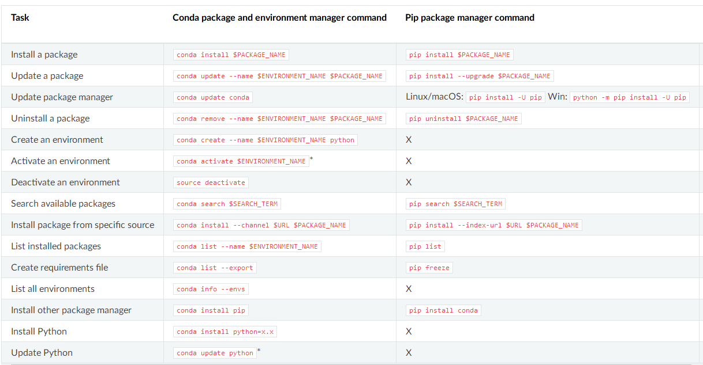

常用软件安装工具之conda：
cpan安装perl 模块：/opt/anaconda3/pkgs/perl-5.26.2-h516909a_1006/lib/5.26.2/
conda原本是为了解决Python模块安装的依赖问题，然而可能是无心栽柳柳成荫，conda目前已经超越了其最初目的而存在，可以解决大多数软件的安装和配置，包括各种本身与python毫无关系的包，也就涵盖了，我们大多数的生物信息学软件。而为此conda的软件源有多种，其中专门收录了生物信息学软件的软件源，亦即bioconda。所以bioconda仅仅是conda的软件源之一，与bioconductor之于CRAN，bioperl之于CPAN是类似的。所以掌握bioconda，事实上也就是掌握conda，反之亦然.
conda是一个开源的软件包管理系统和环境管理系统，用于安装多个版本的软件包及其依赖关系，并在它们之间轻松切换。
Conda包括Anaconda和Miniconda。Conda还包括在Anaconda的Continuum订阅中，它为Python, R, Scala, Java, Javascript, C/ C++以及其他应用程序堆栈提供包管理。而pypi（pypi是一个python包的仓库，里面有很多别人写好的python库，你可以通过easy_install或者pip进行安装）也可以使用Conda，尽管这种做法可能不是最新的。
1）软件源channel 添加。
常用软件源：
conda config --add channels conda-forge
conda config --add channels defaults
conda config --add channels r
conda config --add channels bioconda
以上，无论是conda默认的软件源还是bioconda软件源都是国外的，速度非常慢，所以需要增加国内软件源，同时bioconda已经有清华，中科大两个国内镜像，也添加进去：
conda config --set show_channel_urls yes
2）对于非root用户而言，如果直接运行conda install bwa，那么可能会受到写入权限的限制，此时可以使用conda最灵活的操作，模拟虚拟环境（注意不是创建）。
2.1 创建虚拟环境 conda create -n bioinfoLzw
2.2 激活虚拟环境 source activate bioinfoLzw | conda activate python27 （conda deactivate 解除虚拟环境）
常用命令：
conda info # 查看目前conda软件源情况
#查看所有环境
conda config --help #帮助文档
conda config
--show #查看conda的所有配置信息（conda config --show-sources）
--get 【key】 # 获取某一变量的信息（如conda config --get channels | conda config --show channels）
--append 【KEY VALUE】 #添加信息
--set 【KEY VALUE】 #设置配置信息
--remove 【KEY VALUE】 #删除配置信息
--remove-key 【KEY】 #删除配置信息
--add channels 【url】 #添加私有源
--remove channels 【url】 #移除源
conda create -n python2 --clone py2 #克隆一个原来叫做py2的环境重新命名成python2
conda install # 安装指定包 【fastp、bwa、bowtie、samtools、sambamba、picard、bedtools】
conda remove # 移除指定包
conda remove -n py2 --all #移除指定环境所有package
conda-env remove -n pureCN #移除环境
conda update # 更新指定包
conda list #显示所有packages 的信息（版本号与channels频道）
conda search #查询软件信息（版本号与channels频道）
